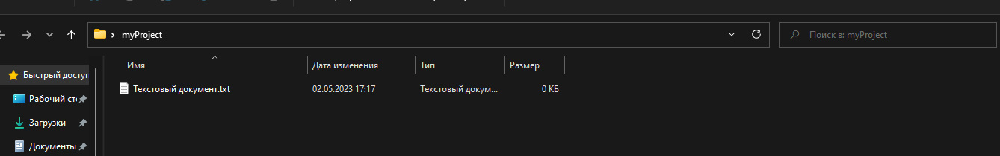
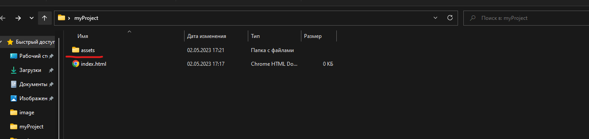
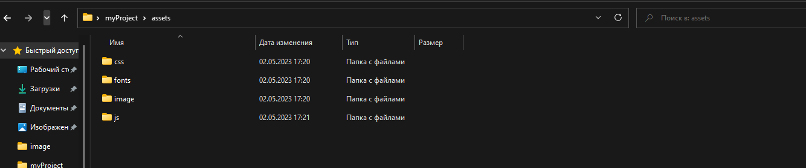

3) Далее мы открываем папку с сайтом и создаем там текстовый файл.

Мы должны его переименновать в index.html
Файл index.html является самым главным файлом на сайте, с помощью него и происходит открытие сайта ведь все браузеры первым делым открывают его. Если же бразер не найдет этот файл то он не сможет открыть ваш сайт. В большенстве случаев данный файл является главной страницой сайта.
Далее нам следует создать папку для всех дополнительных файлов сайта, этими файлами могут быть начиная от файлов стилей и картинок и заканчивая скриптами и настройками url.
Обычно такую папку называют либо assets либо dop, но правильней ее канечно называть assets.

Далее нам нужно открыть это папку и создать те папки которые в последствии нам потребуются.

В основном нам могут потребавться:
1) Папка со стилями сайта (css)
2) Папка со всеми изображениями, которые в дольнейшем мы будем размещать на сайте (image)
3) Папка со всеми шрифтами которые использует сайт (fonts)
4) Папка со скриптами (js)